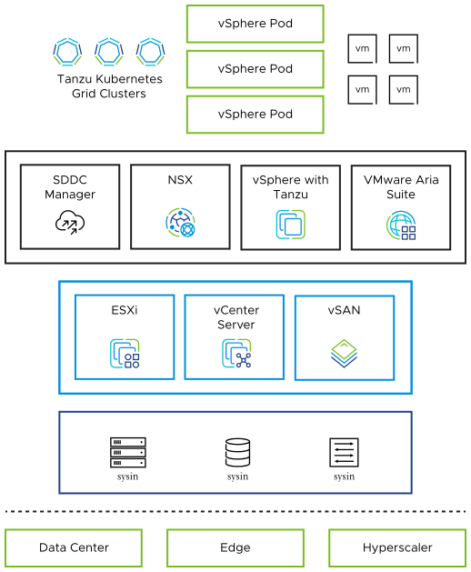

请访问原文链接：VMware Cloud Foundation 5.2 - 领先的多云平台 查看最新版。原创作品，转载请保留出处。
作者主页：sysin.org
VMware Cloud Foundation 5.2 | 23 JUL 2024 | Build 24108943
VMware Cloud Foundation 5.1 | 07 NOV 2023 | Build 22688368
VMware Cloud Foundation 5.0 | 01 JUN 2023 | Build 21822418
多云平台
VMware Cloud Foundation
高效管理虚拟机 (VM) 和容器工作负载。为本地部署的全栈超融合基础架构 (HCI) 提供云的优势。
VMware Cloud Foundation™ 为传统企业和现代应用程序提供了无处不在的混合云平台。VMware Cloud Foundation 基于经过验证的全面软件定义堆栈（包括 VMware vSphere®、VMware VMware vSAN®、VMware NSX®、VMware vSphere® with VMware Tanzu™ 和 VMware Aria Suite™），提供了一整套软件定义服务用于计算、存储、网络、容器和云管理。构建敏捷、可靠、高效的云基础设施，可跨私有云和公共云提供一致的操作。

通过使用VMware Cloud Foundation ，数据中心云管理员能够以快速、可重复、自动化的方式（而不是传统的手动流程）配置应用程序环境
适用于多云和现代应用的全包式平台
简化的管理
通过全栈标准化 HCI 精简运维。交付具有自动化和编排功能的开发人员就绪型基础架构。
更低的成本
通过精简的运维管理和广泛的部署选项 (sysin)，缩减 CAPEX 和 OPEX 并降低总体拥有成本 (TCO)。
可扩展的一致体系架构
在本地或云中管理工作负载。在任何地方扩展相同的基础架构、运维、工具和流程，以实现可扩展性，而不会影响企业级应用和容器化应用。
整合式虚拟机和容器管理
通过集成式容器编排（由 VMware Cloud FoundationwithTanzu 交付），优化虚拟机和 Kubernetes 集群的性能、恢复能力和可用性 (sysin)。
VMware Cloud Foundation 数字解读
VMware 委托 ForresterConsulting 就 VMware Cloud Foundation 部署的潜在投资回报进行了一项总体经济影响 (TEI) 研究。
171%
投资回报率
600 万美元
净现值
9 个月
投资回收期
VMware Cloud Foundation 的功能特性
广泛的部署和消费选项
从云连接和断开云连接的部署选项中进行选择 (sysin)，为 HCI 提供多种订阅和即服务选项。利用管理员和开发人员云服务组合。
云连接服务
借助全新的云连接 VMware Cloud Foundation+，可缩短维护时段并即时获取新功能特性。
自动置备
使用标准化 HCI 构造块快速置备虚拟机和容器 (sysin)，以实现安全、一致的云级部署。
集成和服务
可延展的全栈体系架构能够部署可延展到数据中心、边缘和云部署的云运维模式。
云级网络
利用 L2-L7 网络和安全虚拟化实现虚拟云网络，以通过微分段提供云级网络连接和性能。
原生安全性
通过细分到单个工作负载的微分段，提供精细的保护 (sysin)。创建情境感知安全策略，并利用 IDS/IPS 来抵御横向威胁。
比较 VMware Cloud Foundation 各个版本
VMware Cloud Foundation with Tanzu 包括 Tanzu Standard 版
VMware Cloud Foundation + 和 VMware Cloud Foundation 订阅包括 Tanzu Standard 版
Starter
自动执行基础架构部署和置备；包括针对传统虚拟机工作负载的 VMware 核心超融合体系的生命周期管理。
不随 VMware Cloud Foundation + 提供
Standard
具有集成安全性、自动化部署和生命周期管理功能的全栈超融合基础架构 (HCI)。
Advanced
通过自动化运维，部署具有高级存储、网络连接和云管理功能的 VMwareCloud 运维模式 (sysin)。
Enterprise
借助企业级存储、网络连接和管理功能实施完整的企业级云，并通过集成式虚拟机工作负载自动化进行了优化。
学习、评估、实施
探索技术文档、报告、试用版、社区等。
查看有关 VMware Cloud Foundation 的常见问题和解答。
了解如何在各种环境中部署 VMware Cloud Foundation。
获取运维软件定义数据中心所需的最新技术资源。
准备好开始体验了吗？
使用适用于企业级应用和现代应用的混合云平台运行和管理任何应用。
VMware Cloud Foundation BOM
VMware Cloud Foundation Bill of Materials (BOM)
VMware Cloud Foundation 5.0
The VMware Cloud Foundation software product is comprised of the following software Bill-of-Materials (BOM). The components in the BOM are interoperable and compatible.
| Software Component | Version | Date | Build Number |
|---|---|---|---|
| Cloud Builder VM | 5.0 | 01 JUN 2023 | 21822418 |
| SDDC Manager | 5.0 | 01 JUN 2023 | 21822418 |
| VMware vCenter Server Appliance | 8.0 Update 1a | 01 JUN 2023 | 21815093 |
| VMware ESXi | 8.0 Update 1a | 01 JUN 2023 | 21813344 |
| VMware vSAN Witness Appliance | 8.0 Update 1 | 14 APR 2023 | 21495797 |
| VMware NSX | 4.1.0.2 | 01 JUN 2023 | 21761691 |
| VMware vRealize Suite Lifecycle Manager | 8.10 Patch 1 | 21 FEB 2023 | 21331275 |
VMware Cloud Foundation 5.1
The VMware Cloud Foundation software product is comprised of the following software Bill-of-Materials (BOM). The components in the BOM are interoperable and compatible.
| Software Component | Version | Date | Build Number |
|---|---|---|---|
| Cloud Builder VM | 5.1 | 07 NOV 2023 | 22688368 |
| SDDC Manager | 5.1 | 07 NOV 2023 | 22688368 |
| VMware vCenter Server Appliance | 8.0 Update 2a | 26 OCT 2023 | 22617221 |
| VMware ESXi | 8.0 Update 2 | 21 SEP 2023 | 22380479 |
| VMware vSAN Witness Appliance | 8.0 Update 2 | 21 SEP 2023 | 22385739 |
| VMware NSX | 4.1.2.1 | 7 NOV 2023 | 22667789 |
| VMware Aria Suite Lifecycle | 8.14 | 19 OCT 2023 | 22630473 |
VMware Cloud Foundation 5.2
The VMware Cloud Foundation software product is comprised of the following software Bill-of-Materials (BOM). The components in the BOM are interoperable and compatible.
| Software Component | Version | Date | Build Number |
|---|---|---|---|
| Cloud Builder VM | 5.2 | 23 JUL 2024 | 24108943 |
| SDDC Manager | 5.2 | 23 JUL 2024 | 24108943 |
| VMware vCenter Server Appliance | 8.0 Update 3a | 18 JUL 2024 | 24091160 |
| VMware ESXi | 8.0 Update 3 | 25 JUN 2024 | 24022510 |
| VMware vSAN Witness Appliance | 8.0 Update 3 | 25 JUN 2024 | 24022510 |
| VMware NSX | 4.2 | 23 JUL 2024 | 24105817 |
| VMware Aria Suite Lifecycle | 8.18 | 23 JUL 2024 | 24029606 |
下载 VMware Cloud Foundation
VMware Cloud Foundation 5.0.0:
- 百度网盘链接：
[EoD]
VMware Cloud Foundation on VxRail 5.0 has a different planned release date. Therefore, we advise customers who are currently running VCF on VxRail to wait until the release of VMware Cloud Foundation on VxRail 5.0 is available before proceeding with the upgrade.
VMware Cloud Foundation 5.0.0 File Information:
Cloud Builder Deployment Parameter Guide
File size: 78.15 KB
Name: vcf-ems-deployment-parameter.xlsx
Release Date: 2023-06-01
SHA256SUM: caba085943c2b7fb6058d163bc9b1f5ac00c2b3be4ff9309895b100dba7ff77dCloud Builder Deployment Parameter Guide for VxRail
File size: 74.27 KB
Name: vcf-vxrail-deployment-parameter.xlsx
Release Date: 2023-06-01
SHA256SUM: 6879a3798719481062b638b512d5540462c721f9abf6542d58fa90a62e45fb6eVMware Cloud Builder
File size: 27.8 GB
Name: VMware-Cloud-Builder-5.0.0.0-21822418_OVF10.ova
Release Date: 2023-06-01
SHA256SUM: 8c2671f5d789c454d7acab3c000e370c4cc41aefcda3054f323843b520ab1460VMware Cloud Foundation Tools
Async Patch Tool
File size: 193.9 MB
Name: vcf-async-patch-tool-1.1.0.1.tar.gz
Release Date: 2023-06-22
SHA256SUM: 32dcc687f164b36cbbdc0b496104f2d49c71e15f6b46028de427d43b965eb322VMware Cloud Foundation SDDC Manager Appliance
File size: 3.18 GB
Name: VCF-SDDC-Manager-Appliance-5.0.0.0-21822418.ova
Release Date: 2023-06-01
SHA256SUM: 800ace201326c34fa67bb301cd3ca1877fd9b8fab4155e1a13129a9f6909eb55Bundle Transfer Utility
File size: 193.13 MB
Name: lcm-tools-prod.tar.gz
Release Date: 2023-06-22
SHA256SUM: e1119aaa1f5821a7b1c8b0c385bd95d129c757dc2ac99add964ea3dbea3242f9
VMware Cloud Foundation 5.1.0:
百度网盘链接：https://pan.baidu.com/s/181zcstIHhPTf_hKgwiQnwA?pwd=
[本站 ESXi 8 定制版用户或已通过导航栏捐助下载 VMware 产品可留言获取]VMware Cloud Foundation 5.1.0 File Information:
VMware Cloud Builder
Name: VMware-Cloud-Builder-5.1.0.0-22688368_OVF10.ova
File Size: 29.48 GB
Last Updated: Feb 23, 2024 12.00AM
SHA256SUM: f7ea29d4f453ae7f6b03e8214b84e76dd1b935d577a580dc712d5e21b3e3103fCloud Builder Deployment Parameter Guide
Name: vcf-ems-deployment-parameter.xlsx
File Size: 81.04 KB
Last Updated: Feb 23, 2024 12.00AM
SHA256SUM: 642f5624db9d62501e36515341661d0aebfc8e7ca856bb2461ca8e44d425b78bVMware Cloud Foundation 5.1.0 Tools
Bundle Transfer Utility
Name: lcm-tools-prod.tar.gz
File Size: 311.4 MB
Last Updated: Jul 23, 2024 04.30AM
SHA256SUM: fda95599e40556a75a624c3ac4baf89847c4070b52d1ac626e8f7de2ceda719eVMware Cloud Foundation SDDC Manager Appliance
Name: VCF-SDDC-Manager-Appliance-5.1.0.0-22688368.ova
File Size: 3.65 GB
Last Updated: Nov 07, 2023 12.00AM
SHA256SUM: ce0d5a9176249ae03dd0a17203936226d6bdb476b0fd096b7fa04fcc73d6ecfeAsync Patch Tool
Name: vcf-async-patch-tool-1.2.0.0.tar.gz
File Size: 311.28 MB
Last Updated: Jul 21, 2024 11.49PM
SHA256SUM: c8a1b9e801436ddc6e8c15025b92877839398cac045f53adcae23f00457a7723
VMware Cloud Foundation 5.2.0:
百度网盘链接：https://pan.baidu.com/s/181zcstIHhPTf_hKgwiQnwA?pwd=?<专享>
通过捐赠下载此版本：点击 💙支付宝 或者 💚微信支付，扫码备注邮箱（用于识别注册用户，忘记备注请提供时间），
评论区留言指定版本（默认当前最新版），在其他平台留言恕无法处理。提示：捐赠或赞赏属于自愿赠予行为，提交后即表示您对作者的支持与认可。为避免误操作，请在确认前仔细检查金额，支付完成后将无法撤销或退还。
VMware Cloud Foundation 5.2.0 File Information:
VMware Cloud Builder
Name: VMware-Cloud-Builder-5.2.0.0-24108943_OVF10.ova
File Size: 27.98 GB
Last Updated: Jul 18, 2024 09.20AM
SHA256SUM: d0d33c3297ccd4f58548cd77e031a7672b664a6b7d35e80787518f11d8994fe3Cloud Builder Deployment Parameter Guide
Name: vcf-ems-deployment-parameter.xlsx
File Size: 84.68 KB
Last Updated: Jul 25, 2024 03.44AM
SHA256SUM: 5ebf3c9291fd9778688245f6287c24168f9736619349a06ade320c0b738dfcadVMware Cloud Foundation 5.2 Tools
VCF-SDDC-Manager-Appliance
Name: VCF-SDDC-Manager-Appliance-5.2.0.0-24108943.ova
File Size: 4.32 GB
Last Updated: Jul 18, 2024 10.27PM
SHA256SUM: 3c83e883fdb6aff08f303859ab9b0a599f12d5eed9ca71dde6d6bc6751c31210VCF Import Tool
Name: vcf-brownfield-import-5.2.0.0-24108578.tar.gz
File Size: 8.28 MB
Last Updated: Jul 19, 2024 03.19AM
SHA256SUM: caa7d163b66d7987efe8be797f34d11aec8320cc18942c7041d31b3f570d1c12VMware Software Install Bundle - NSX_T_MANAGER 4.2.0.0
Name: bundle-124941.zip
File Size: 11.11 GB
Last Updated: Jul 23, 2024 03.07AM
SHA256SUM: 0653cba1bf66a02d71050cde8728b0c9d2646ff909f515036d30cb7b5259ab07Bundle Transfer Utility
Name: lcm-tools-prod.tar.gz
File Size: 311.4 MB
Last Updated: Jul 23, 2024 04.30AM
SHA256SUM: fda95599e40556a75a624c3ac4baf89847c4070b52d1ac626e8f7de2ceda719eAsync Patch Tool
Name: vcf-async-patch-tool-1.2.0.0.tar.gz
File Size: 311.28 MB
Last Updated: Jul 21, 2024 11.49PM
SHA256SUM: c8a1b9e801436ddc6e8c15025b92877839398cac045f53adcae23f00457a7723
相关产品：
- VMware vSphere 8.0 Update 3j 下载 - 企业级工作负载平台
- VMware vSAN 6.7U3 | 7.0U3 | 8.0U3 | 9.0 - 存储虚拟化软件
- VMware NSX 4.2.4 - 网络安全虚拟化平台
- VMware Aria Suite 8.18 下载汇总 - 云管理解决方案
- VMware Tanzu Kubernetes Grid (TKG) 2.5.2 - 企业级 Kubernetes 解决方案

文章用于推荐和分享优秀的软件产品及其相关技术，所有软件默认提供官方原版（免费版或试用版），免费分享。对于部分产品笔者加入了自己的理解和分析，方便学习和研究使用。任何内容若侵犯了您的版权，请联系作者删除。如果您喜欢这篇文章或者觉得它对您有所帮助，或者发现有不当之处，欢迎您发表评论，也欢迎您分享这个网站，或者赞赏一下作者，谢谢！
 支付宝赞赏
支付宝赞赏  微信赞赏
微信赞赏赞赏一下
敬请注册！点击 “登录” - “用户注册”（已知不支持 21.cn/189.cn 邮箱）。 请勿使用联合登录（已关闭）。